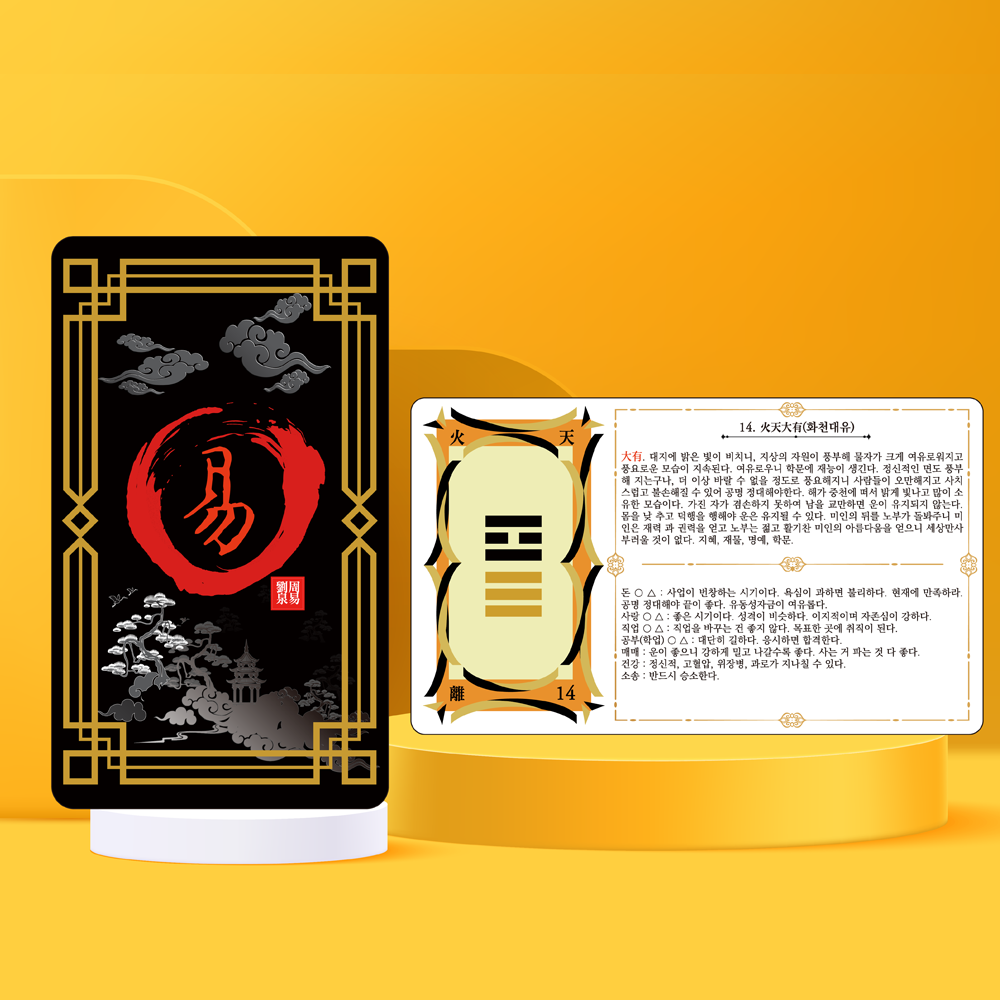
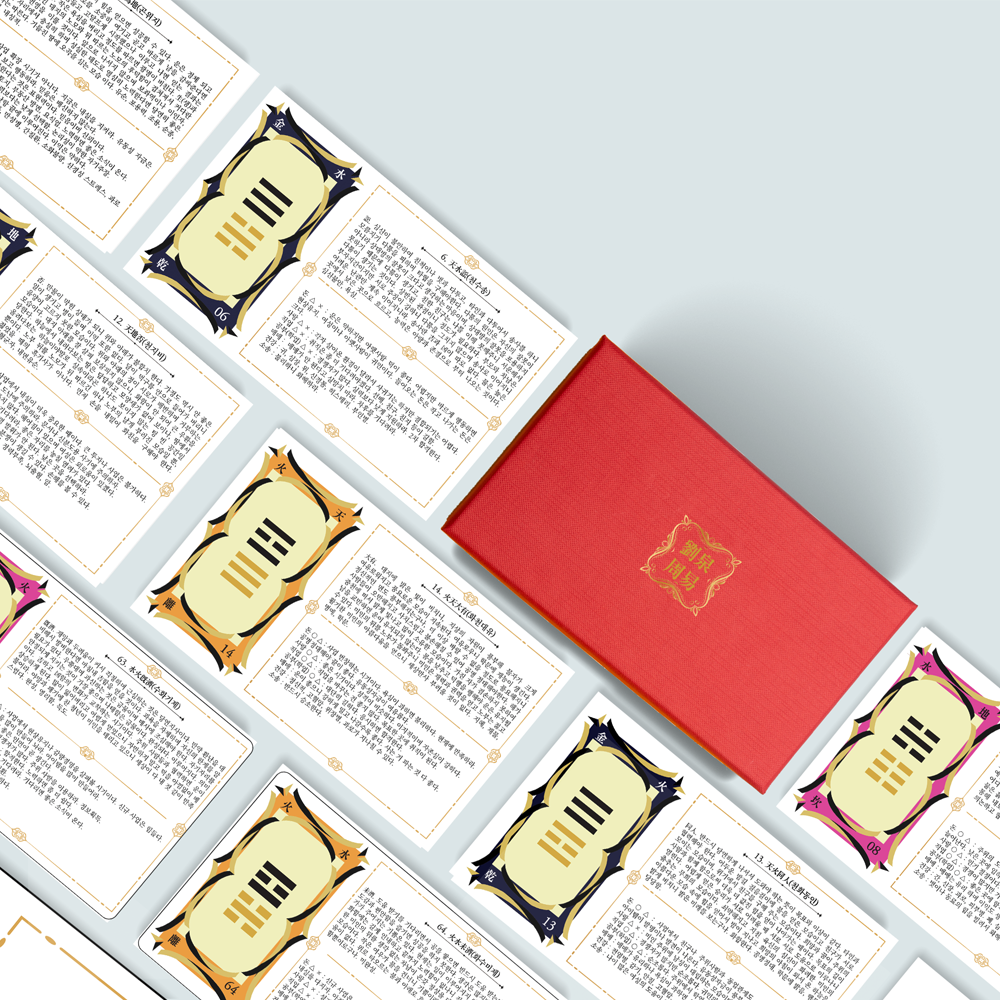
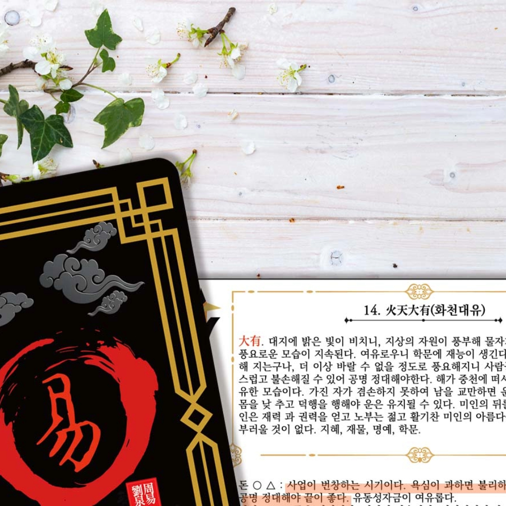
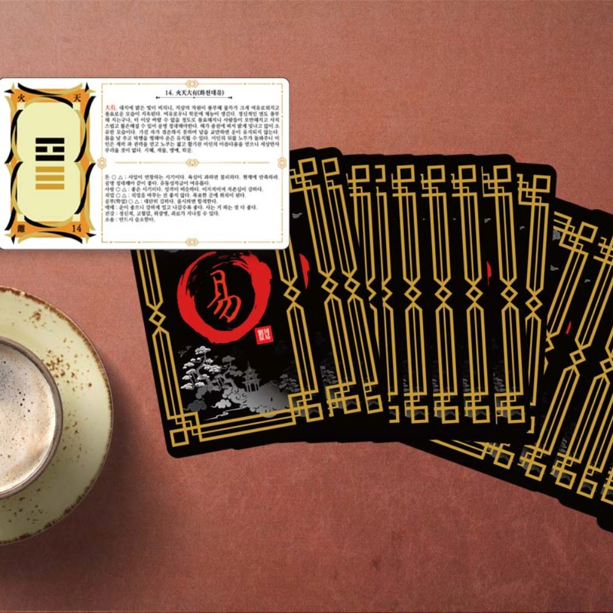
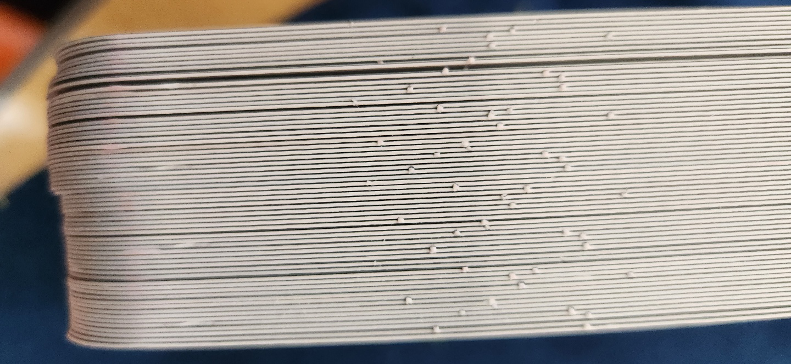
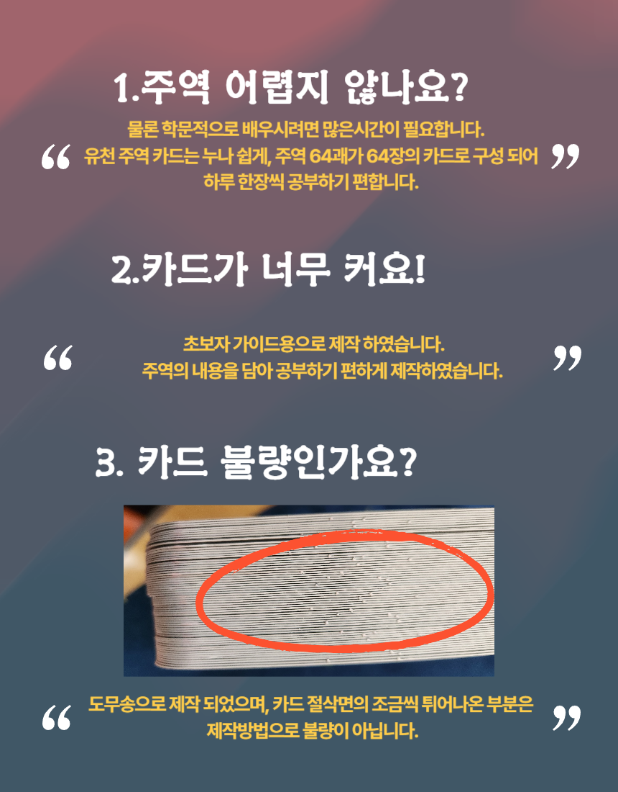

PROJECT 03 · I CHING GUIDE CARD
유천
주역카드
주역 64괘의 상징과 해설을 한 장에 담아, 어렵게 느껴지는 동양 철학을 매일 가까이에서 펼쳐볼 수 있도록 구성한 가이드 카드입니다.
64 HEXAGRAMSGUIDE CARDDAILY READING

01 / CONCEPT
하루 한 장,
주역을 일상으로
64장의 카드 중 오늘의 질문과 맞닿는 한 장을 펼쳐보세요. 괘의 모습과 핵심 해설을 함께 살피며 낯선 주역의 언어를 천천히 익힐 수 있습니다.
괘상, 번호, 명칭과 해설을 카드 안에 함께 배치해 별도의 책을 오가는 번거로움을 줄였습니다.

02 / CARD SYSTEM
괘와 해설을
한눈에 읽다
카드의 앞면에서는 괘의 상징을 직관적으로 확인하고, 펼친 해설면에서는 의미와 적용 방향을 이어서 살펴볼 수 있습니다.
- 64괘를 한 장씩 독립적으로 구성
- 괘상과 해설을 연결한 정보 구조
- 보관과 선물에 어울리는 붉은 패키지
03 / 64 HEXAGRAMS
64개의 괘,
64개의 관점
건위천부터 화수미제까지 각 괘의 이름과 순서를 확인하고, 관심 있는 괘부터 한 장씩 펼쳐보세요.




04 / BEFORE YOU CHOOSE
카드 제작 특성을
확인해 주세요
여러 장의 카드를 한 번에 재단하는 제작 방식의 특성상 카드 절삭면 일부에 미세하게 돌출된 부분이 보일 수 있습니다. 이는 제작 공정에서 발생할 수 있는 현상으로, 사용 전 상품 안내를 확인해 주세요.
카드의 크기와 구성, 배송·교환 조건은 실제 판매 채널에 표시된 최신 정보를 기준으로 합니다.


안내 카드 리딩은 결과를 확정하거나 보장하지 않습니다. 생각과 선택을 살펴보는 참고 도구로 활용해 주세요.
START YOUR PROJECT
전통의 지혜를
오늘의 콘텐츠로
콘텐츠 기획부터 카드·패키지와 상세페이지 제작까지 오로라닉이 함께합니다.